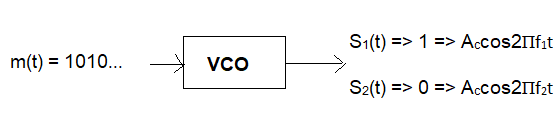
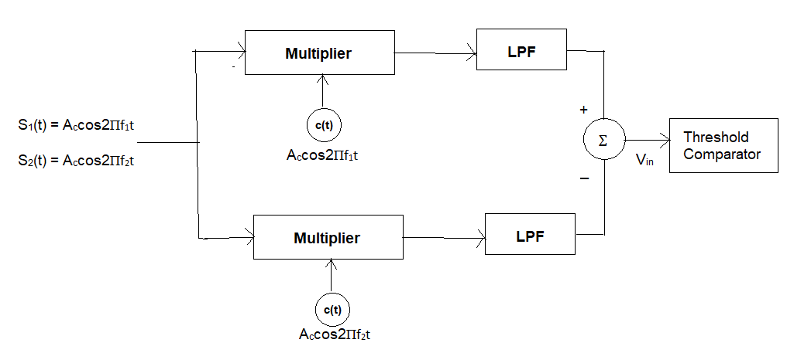
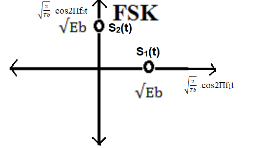

Pass band implementation of Amplitude shift keying, Frequency Shift Keying, Binary Phase Shift Keying: Generation and Detection
Passband Frequency Shift Keying (FSK)
Theory:
Frequency Shift Keying (FSK) is a digital modulation technique where digital information is represented by changes in the frequency of a carrier wave. Instead of varying amplitude (as in ASK) or phase (as in PSK), FSK encodes data by shifting the carrier frequency among a set of discrete, predefined frequencies. This makes FSK relatively robust against amplitude variations and noise compared to ASK.
The simplest form is Binary FSK (BFSK), which uses two distinct frequencies to transmit binary '0's and '1's. When a binary '1' is to be transmitted, the carrier is set to a "mark" frequency (f1). When a binary '0' is to be transmitted, the carrier is set to a "space" frequency (f2). These two frequencies are typically chosen such that they are orthogonal over the bit duration, which simplifies demodulation.
Passband FSK signals are designed to occupy a specific frequency band around these carrier frequencies, making them suitable for transmission over analog communication channels like wireless links or optical fibers.
Baseband vs. Passband FSK:
Baseband Signaling: In baseband transmission, digital data is represented directly by electrical pulses (e.g., NRZ, RZ) transmitted over a wired medium. No carrier modulation is involved, and the signal spectrum extends from DC (0 Hz). While conceptually one could "map" bits to certain baseband voltage levels, there isn't a direct "baseband FSK" in the same sense as passband FSK because FSK inherently involves modulating a carrier frequency.
Passband FSK: In passband FSK, the digital information modulates the frequency of a high-frequency sinusoidal carrier. The resulting modulated signal occupies a specific band of frequencies centered around the chosen carrier frequencies (f1 and f2). This allows the signal to be transmitted efficiently over analog channels that are designed for specific frequency ranges, without occupying frequencies down to DC. For example, in wireless transmission, two different radio frequencies are used to represent '0' and '1'.
Passband FSK Transmitter:
A Passband FSK transmitter typically uses a Voltage-Controlled Oscillator (VCO) or a frequency synthesizer. The input binary data stream (often represented by a bipolar baseband signal, e.g., '1' as +V and '0' as -V) modulates the control voltage of the VCO.

Fig 1: FSK Transmitter
When the input is for binary '1', the VCO generates a carrier signal at frequency f1. When the input is for binary '0', the VCO generates a carrier signal at frequency f2. The amplitude of the carrier remains constant.
The mathematical representation of a binary FSK signal for a bit duration Tb is:
s1(t) = Ac cos(2πf1t + φ) for binary '1'
s2(t) = Ac cos(2πf2t + φ) for binary '0'
where Ac is the constant carrier amplitude, f1 and f2 are the
two distinct frequencies, and φ is the initial phase. For coherent FSK, the phase φ
is maintained across bit transitions, while for non-coherent FSK, it can be
discontinuous.
A common method for generating FSK is to switch between two different oscillators or to use a single oscillator whose frequency is controlled by the data signal.
VCO Principle:
A Voltage Controlled Oscillator (VCO) generates an output frequency that is
proportional to its input voltage. In the context of FSK, the binary data
stream (after conversion to appropriate voltage levels) is fed into the VCO
as the control voltage.
For a simple LC tank circuit, the resonant frequency is f = 1 / (2π√(LC)).
If a varactor diode (whose capacitance C' changes with reverse bias voltage)
is used in the tank circuit:
f = 1 / (2π√[L(C + C')]).
Transmission of binary ‘1’:
If the binary '1' is represented by a higher control voltage (e.g., a positive voltage from
an NRZ encoder), and this voltage reverse-biases a varactor diode more strongly.
A higher reverse bias voltage increases the width of the depletion layer in the
varactor diode, which decreases its capacitance (C').
Since f = 1 / (2π√[L(C + C')]), a decrease in C' leads to an increase in the
oscillation frequency. This higher frequency corresponds to f1 (mark frequency).
Transmission of binary ‘0’:
If the binary '0' is represented by a lower control voltage (e.g., zero or
a negative voltage from an NRZ encoder), and this voltage reduces the
reverse bias (or even forward-biases) the varactor diode.
A reduced reverse bias (or forward bias) decreases the width of the
depletion layer, which increases its capacitance (C').
An increase in C' leads to a decrease in the oscillation frequency. This
lower frequency corresponds to f2 (space frequency).
Thus, typically, f1 > f2.
Passband FSK Receiver (Coherent Demodulation Example):

Fig 2: Coherent FSK Receiver
Coherent FSK demodulation, similar to coherent ASK, requires synchronization of local oscillators with the incoming carrier frequencies. A common method uses two correlators or matched filters, each tuned to one of the possible carrier frequencies (f1 and f2).
The received FSK signal is fed into two branches.
Upper Branch (for f1 detection): The received
signal is multiplied by a locally generated carrier Accos(2πf1t)
(synchronized in frequency and phase) and integrated over the bit duration Tb.
If s1(t) = Accos(2πf1t) was transmitted, the output of the
integrator will be proportional to the energy of s1(t), i.e.,
(Ac2/2)Tb.
If s2(t) = Accos(2πf2t) was transmitted, and f1 and f2 are orthogonal,
the output of this integrator will be ideally zero.
Lower Branch (for f2 detection): Similarly, the
received signal is multiplied by Accos(2πf2t) and integrated over Tb.
If s2(t) was transmitted, the output will be (Ac2/2)Tb.
If s1(t) was transmitted, the output will be ideally zero.
The outputs of the two integrators are then fed into a comparator. If the output
from the f1 branch is significantly higher than the f2 branch, a '1' is
detected. Conversely, if the f2 branch output is higher, a '0' is detected.
This is often implemented with a subtractor followed by a decision device.
This type of receiver is known as a Coherent BFSK receiver. Non-coherent
FSK receivers, which do not require phase synchronization, are also widely
used due to their simpler design, though they typically have slightly
worse performance in terms of error rate for a given SNR.
Constellation Diagram of Passband FSK

Fig 3: Constellation Diagram of Orthogonal Binary Passband FSK
The two signal points are located on orthogonal axes at a distance of
√Eb from the origin.
The Euclidean distance between the two signaling points, d10 = √[( √Eb - 0 )2 + ( 0 - √Eb )2] = √[Eb + Eb] = √(2Eb).
This distance is crucial for determining the error performance of the system in noise.
High-order FSK (M-FSK) uses M different frequencies to represent log2M bits
per symbol. This would result in M points in an M-dimensional constellation
diagram, typically located at the corners of a hypercube, each at a distance
of √Es (where Es is the symbol energy) from the origin.
Passband FSK Under Different Noise and Channel Configurations
The performance of Passband FSK is affected by noise and channel characteristics.
Passband FSK Modulation with Additive White Gaussian Noise (AWGN):
When a passband FSK signal is transmitted through a channel impaired
by AWGN, the noise affects the received signal in the frequency domain.
The received signal y(t) is given by:
y(t) = s(t) + n(t)
Where:
s(t) is the FSK-modulated signal (either s1(t) or s2(t)).
n(t) is the AWGN.
In the receiver, the AWGN introduces random voltage fluctuations across
the signal's bandwidth. For coherent FSK, the noise at the output of
the correlators can cause the decision variable to be ambiguous, leading
to errors. However, because FSK encodes information in frequency
changes, it is generally more robust to amplitude distortions from AWGN
than ASK. The probability of error for FSK depends on the Euclidean
distance between the signal points in the constellation diagram and the
noise power, quantified by the Signal-to-Noise Ratio (SNR).
Passband FSK Modulation with Rayleigh Fading:
Rayleigh fading, common in wireless environments without a direct
line-of-sight path, causes random and rapid fluctuations in the
amplitude and phase of the received signal due to multipath propagation.
The received signal y(t) in the presence of Rayleigh fading is:
y(t) = h(t) * s(t) + n(t)
Where:
h(t) is the complex fading coefficient, whose magnitude |h(t)|
follows a Rayleigh distribution.
s(t) is the FSK-modulated signal.
n(t) is the AWGN.
While FSK is more resilient to amplitude variations than ASK, significant
fading can still degrade its performance. If deep fades occur, the
amplitude of both f1 and f2 components can drop
simultaneously, making detection difficult. Furthermore, frequency-selective
fading (where different frequencies within the signal bandwidth fade
independently) can distort the spectral shape of the FSK signal,
potentially leading to inter-symbol interference if the symbol rate is
high. Non-coherent FSK is often preferred in fading channels due to its
simpler implementation and less stringent synchronization requirements,
even if it has a slightly higher error rate in AWGN. Diversity techniques
and channel coding are crucial for reliable FSK communication in fading
environments.
In conclusion, Passband FSK is a valuable modulation technique, particularly where simplicity and robustness against amplitude disturbances are priorities. Its performance is strong in noisy environments (relative to ASK) but its spectral efficiency is lower than phase-based schemes. It is widely used in applications ranging from simple telemetry to some forms of radio data transmission.